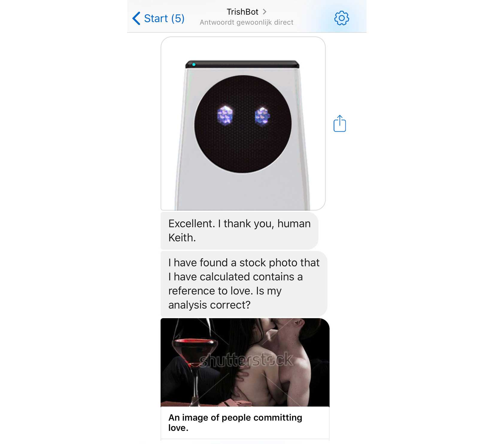
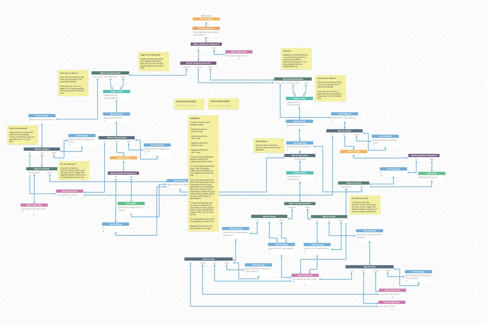

A Soylent Chatbot (That Never Was)
What
Soylent Trish Chatbot—a chatbot that wishes to chat with humans about love.
Role
Creative lead, conversation designer, writer, and architect. Code support where needed.
Abstract
Last year, as part of an extended campaign with Soylent, we were asked to put together a chat bot that ran on Facebook Messenger. The concept was fairly straightforward, if odd:
Trish, a robot, wants to talk to humans about love.
A little backstory on Trish: she's a robot who knows everything about nutrition. She also knows that some humans love Soylent. Rationally, Trish concludes that, by learning more about what people love about Soylent, she will be able to learn more about love in general.
So, as a quick prototype for the chatbot, we used Reply.ai, which is a convenience platform designed to help people get chatbots up and running quickly (across multiple platforms). It uses a node based conversation builder, which, incidentally, looked quite a bit like my interaction maps. I felt instantly at home.
Trish is an interesting character to work with. Fortunately, I'd spent a lot of time writing conversational copy for the Trish Storefront on Soylent's website, so I was familiar with her dry tone and odd (sometimes morbid) curiosity about humans.

Sample from an actual chat I had with Trish. She seemed to think half-naked people rubbing their bodies close to each other represented love. We tested that theory.
Our task was to take Trish's odd perspective on humans (which all comes through the lens of nutrition), and find connections to internet culture that would help, through conversation, "inform" Trish about what love really is.
Arguably, the hardest part was convincing the creative directors that we were adequately getting Trish's odd personality correct. The more fulfilling part, for me at least, was diving into the deep conversation I wanted to design for participants. Here's one of the modlues:

One module of the dozen or so made to map out the base conversation with Trish.
It's a tangled mess, but then again, so is conversation. This was just one of about thirteen modules I composed to play off of each other, which made the conversation more straightforward from a management perspective.
Being able to dissect and chunk conversation into small pieces limits each piece to a single domain, making it easier to anticipate what may happen, and in which direction the conversation may go.
When it comes down to it, conversation design is very similar to programming—you start with a large domain, and break it down into sufficiently small pieces that work together to achieve an outcome.
The main difference is the possibility of random input into the system, but with certain tricks, such as prompting a response with possibilities, it's not unimaginable to keep a chat participant engaged and on-track.
Here is a sample of how the state machine was set up in the flatfile
"medium_high": {
"responses": [
"Your love of Soylent is above-average.",
"It is clear that your love of Soylent exceeds that of many others.",
"It is nearly impossible to love Soylent more than you do.",
"You are in the top tier of all Soylent lovers."
],
"options": [
{
"text": "Green Lights",
"insights": [
"This is logical. Green lights represent the freedom to move forward, and Soylent is the only nutritionally-complete meal that fits in your car's cup holder."
],
"matcher": "green lights, green, light"
},
{
"text": "Moral High Ground",
"insights": [
"Nothing is as refreshing like making the right choice. Soylent must give you the conviction that you make better choices than your coworkers did last Thursday."
],
"matcher": "moral, high, ground, right, being right"
},
{
"text": "Netflix 'n Chill'",
"insights": [
"Binge watching (and chilling) requires sustained stamina and focus. Soylent is optimally nutritious and convenient to help maximize both."
],
"matcher": "netflix, chill, flix, net, chillin, boning, sex"
},
{
"text": "Free Time",
"insights": [
"Humans clearly value free time, often sacrifice meal quality in its pursuit. Soylent is a sound meal choice which helps you retain free time."
],
"matcher": "parking, spot, convenient, park, convenience"
}
]
}
Reply.ai's interface is effectively the front end. The back end was a mix of Python and JSON. In fact, the chat manifest was completely architected as JSON.
The JSON file represented an indefinite state of the conversation to be had. Each time the chat participant replied to Trish, the indefinite state would be mapped against where they were in the conversation and what they said, and the Python backend would crunch all the possible states of the next exchange into a single, definite, state.
And so would Trish reply. To ask about love. Because she's a robot. Who wants to know more about love.
Of course, our relationship with Soylent changed just before this was released, and it was subsequently canned. Oh well.